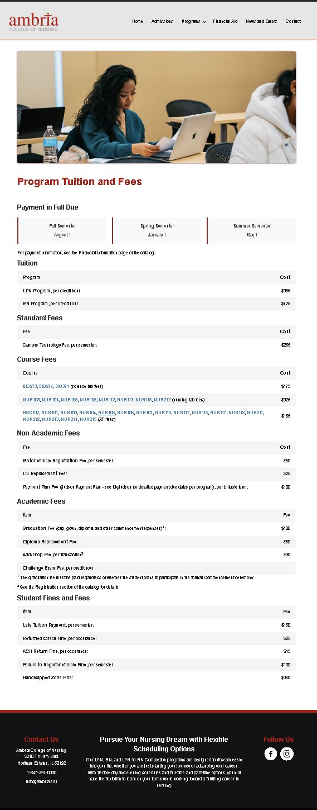

Two real web builds for Judson University and its acquired nursing college, Ambria — both live in production. Each project required working within an existing institutional brand system and building for real students and prospective enrollees.
When Judson University acquired Ambria College of Nursing, Ambria's tuition and fee information existed only inside Judson's academic catalog — a dense, table-heavy page with no Ambria branding or visual hierarchy. The goal was to give that content a proper home on Ambria's own site: same information, completely different experience.

Judson's existing news presence was scattered — individual department pages, no central hub, and no consistent way for the university to surface events, announcements, and press releases in one place. This page was designed and built from scratch to serve as that hub, organized around how different types of content actually get consumed.